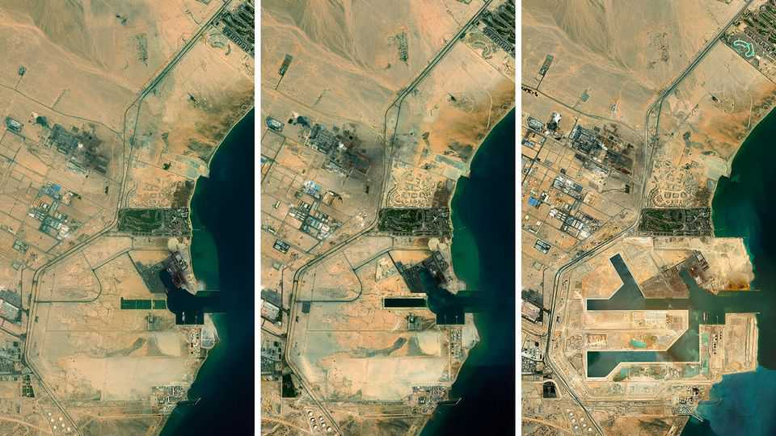
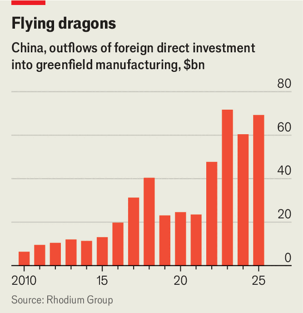

Chinese firms are wrapping their supply chains around the globe
A rewiring of global manufacturing is under way

Aug 20th 2026
The ancient port of Ain Sokhna, on the Gulf of Suez, once received turquoise destined for the regalia of pharaohs. Now it welcomes a new source of wealth: Chinese manufacturers. In just a few years their investment has transformed the area. Scores of factories have appeared, producing everything from fibreglass to switchgears. In January a new port terminal—built with financing from two Chinese logistics giants, COSCO and CK Hutchinson—began operations.
Ain Sokhna forms part of the wider Suez Canal Economic Zone, a network of industrial parks and ports that stretches north to the Mediterranean. Roughly half the investment it has attracted in recent years has come from China. The factory-building extends far beyond North Africa. From Saudi Arabia and Hungary to Brazil and Indonesia, Chinese industrial parks are springing up, along with supporting infrastructure.
The pace of this investment has accelerated sharply. In the past three years alone Chinese companies have spent more than $200bn building factories abroad (see chart). The character of their supply chains is also changing, in three ways. First, they are spread more widely, with large production nodes in nearly every region of the globe. Second, they have grown deeper, with many Chinese suppliers following manufacturers into new sites, replicating the tight-knit ecosystems back home. Third, they are increasingly dominated by strategic industries, from electric vehicles and clean energy to data-centre gear. The consequence is that a rewiring of global manufacturing is under way.
A number of reasons explain why Chinese firms are making their wares in an expanding array of places. Weak consumer spending and fierce competition at home have encouraged them to venture into new markets. The tariffs introduced by the second Trump administration have also incentivised production in places that have been hit with less punitive levies than historic Chinese outposts such as Vietnam.

Various countries in the global south have dangled added incentives. Egypt, for instance, offers a “golden licence” that slashes red tape for big projects. Mohamed Eldib, a lawyer who helps Chinese firms set up operations in the country, says they are eager to “come in and make money” selling to Egypt’s 120m people while also using it as an export base.
The result is increasingly dispersed production footprints. Take JA Solar, JinkoSolar and TrinaSolar, three Chinese manufacturers that began making solar panels in various South-East Asian countries a decade ago and are now setting up factories in the Gulf. New Chinese production hubs are gradually being woven into customers’ supply chains. Nordex, a German manufacturer of wind turbines, now purchases blades from a factory in Morocco that its Chinese supplier opened last year.
Europe has also emerged as a popular destination. Chinese firms’ foreign direct investment in all-new “greenfield” projects on the continent rose by half in 2025, to a record €8.9bn ($10.1bn), according to Rhodium Group, a research firm, and MERICS, a think-tank. Hungary has attracted much attention. Serbia has also seen a growing Chinese presence. Linglong Tire, a car-parts supplier, is among the Chinese manufacturers to have begun producing in the country. It recently announced it was expanding the capacity of its largely automated factory in the city of Zrenjanin, which supplies Western carmakers including Volkswagen and Ford.
At the same time China’s global supply chains have deepened, with more upstream manufacturing taking place abroad. Gotion, a Chinese battery-maker, is constructing a gigafactory in an industrial zone 70km north-east of Morocco’s capital, Rabat; a number of Chinese suppliers, including BTR, which makes anodes and cathodes, and Hailiang Group, which produces copper foil, are building factories a few hours’ drive away to provide inputs. At an industrial zone on the outskirts of Cairo, where a Chinese manufacturer of home appliances has built a factory, an executive notes that the firm has likewise encouraged some of its suppliers to set up local plants.
Plenty of inputs are still shipped in. Machine tools are often imported from Chinese suppliers such as Yangli Group. So are components or materials that are unavailable (or much pricier) locally. Chinese exports of capital goods increased by 14% in the first half of 2026, year on year. Exports of intermediate goods rose by 27%. With time, however, more of those inputs may be sourced from nearer by.
Meanwhile, China’s logistics firms are helping its manufacturers to link their newly sprawling supply chains. These now operate or have invested in at least 132 foreign ports, from Greece to Sri Lanka, along with airports and rail lines, including one from Budapest to Belgrade completed earlier this year.
China Inc’s overseas investment binge has focused heavily on a handful of strategic industries. In order to satisfy rising demand for electricity, countries in the global south in particular have become eager buyers of China’s clean-energy technology. The vast solar farms being built in Egypt’s deserts rely largely on Chinese equipment, a growing share of which is produced locally. Chinese EVs, now a common sight in cities from Rio de Janeiro to London, are increasingly being made in regional hubs nearer to customers.
The equipment required for artificial-intelligence data centres has been another focus. Thailand, for example, has emerged as a manufacturing centre for Chinese makers of high-speed optical components, such as Zhongji InnoLight, whose products are used by America’s cloud-computing giants around the world.
Chinese firms hoping to invest abroad have found they have the field to themselves, as Western rivals concentrate their factory-building in America to appease its protectionist government. An Egyptian official adds that, when Chinese businesses decide to build, they do so quickly.
Their foreign expansion is not without obstacles. The volatile tariffs imposed by America have resulted in some projects being cancelled or cut back. On August 13th the White House published a report titled “The Great Transshipment Scam” that called for sweeping restrictions on imports with even a whiff of Chinese involvement. At the same time governments in places such as Brazil and Turkey have been imposing local-content requirements, which result in more of the value being added in their countries but make manufacturing there less attractive. Currency fluctuations and high borrowing costs in emerging markets complicate matters further.
China’s government has also been making life hard for the country’s globe-trotting businesses. Last month a new package of outbound-investment regulations came into effect which, among other things, restrict the transfer of technology and data abroad and introduce a national-security review process.
So far the overall share of global manufacturing taking place in China has shown no indication of decline. Yet with ever more of its companies investing abroad, that may soon change. Even then, however, the world will continue to rely on Chinese goods—wherever they are made. ■